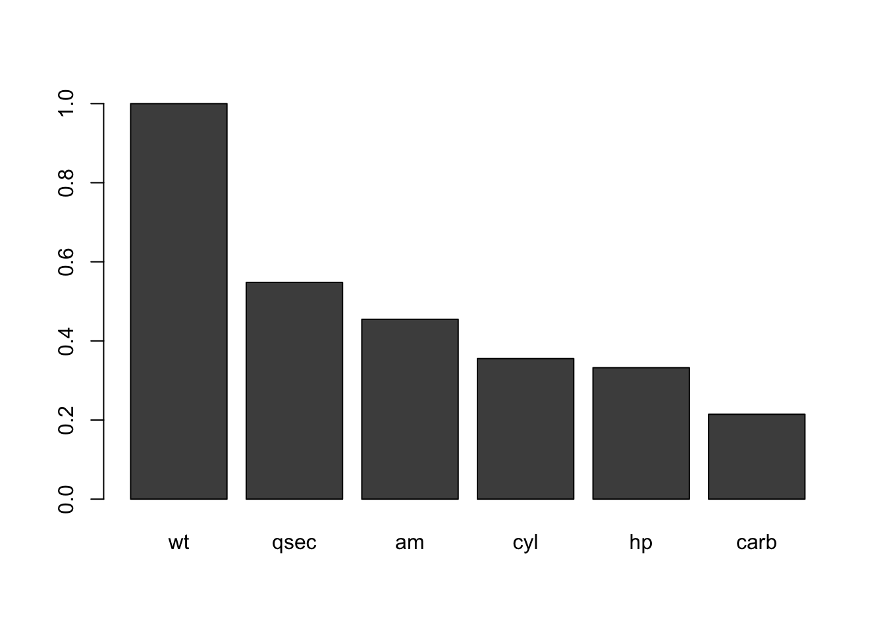
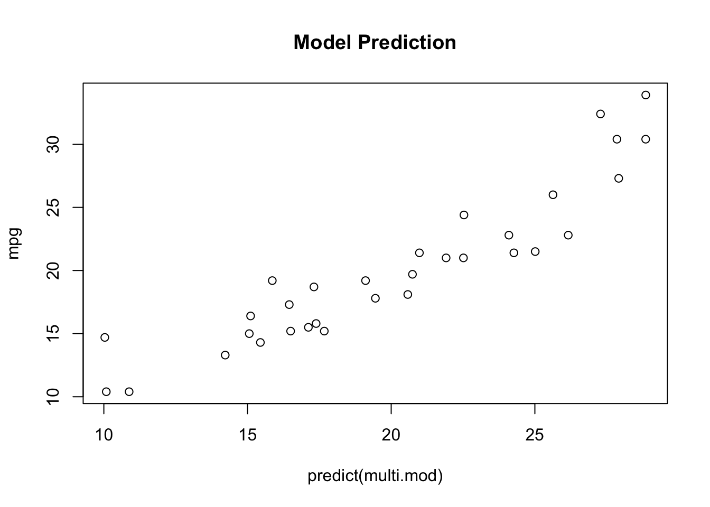

library(MuMIn)## Warning: package 'MuMIn' was built under R version 3.4.4data("mtcars")
str(mtcars) #auto industry dataset that is included with R to predict most important factors for gas mileage (mpg)## 'data.frame': 32 obs. of 11 variables:
## $ mpg : num 21 21 22.8 21.4 18.7 18.1 14.3 24.4 22.8 19.2 ...
## $ cyl : num 6 6 4 6 8 6 8 4 4 6 ...
## $ disp: num 160 160 108 258 360 ...
## $ hp : num 110 110 93 110 175 105 245 62 95 123 ...
## $ drat: num 3.9 3.9 3.85 3.08 3.15 2.76 3.21 3.69 3.92 3.92 ...
## $ wt : num 2.62 2.88 2.32 3.21 3.44 ...
## $ qsec: num 16.5 17 18.6 19.4 17 ...
## $ vs : num 0 0 1 1 0 1 0 1 1 1 ...
## $ am : num 1 1 1 0 0 0 0 0 0 0 ...
## $ gear: num 4 4 4 3 3 3 3 4 4 4 ...
## $ carb: num 4 4 1 1 2 1 4 2 2 4 ...model<-lm(mpg~., mtcars) #the . after the ~ means include the whole dataset
options(na.action = "na.fail") #needs this option set to run model toolmulti<-dredge(model, trace=1) #find all models for mpg, trace setting makes it show progress bar## Fixed term is "(Intercept)"multi.cut<-get.models(multi, subset= delta<2) #delta is the difference in AIC from the best model, so subsetting the models into those within 2 of best model.
imp.multi<-importance(multi.cut) # importance is sum of akaike weights for each variable. Weights are
imp.multi #shoes importance of variables from models in multi.cut## wt qsec am cyl hp carb
## Importance: 1.00 0.55 0.45 0.36 0.33 0.21
## N containing models: 8 4 3 3 3 2barplot(t(imp.multi)) #display importance values
multi.mod<-model.avg(multi.cut)
multi.mod##
## Call:
## model.avg(object = multi.cut)
##
## Component models:
## '156' '36' '1456' '346' '1256' '236' '46' '56'
##
## Coefficients:
## (Intercept) am qsec wt cyl hp
## full 25.09408 1.395553 0.5718666 -3.62078 -0.4473088 -0.007273417
## subset 25.09408 3.068905 1.0434061 -3.62078 -1.2587822 -0.021887320
## carb
## full -0.1044988
## subset -0.4871839summary(multi.mod) #check out model coefficients ##
## Call:
## model.avg(object = multi.cut)
##
## Component model call:
## lm(formula = mpg ~ <8 unique rhs>, data = mtcars)
##
## Component models:
## df logLik AICc delta weight
## 156 5 -72.06 156.43 0.00 0.23
## 36 4 -74.01 157.49 1.06 0.13
## 1456 6 -71.16 157.69 1.26 0.12
## 346 5 -72.74 157.78 1.36 0.12
## 1256 6 -71.28 157.92 1.50 0.11
## 236 5 -72.81 157.93 1.50 0.11
## 46 4 -74.33 158.13 1.71 0.10
## 56 4 -74.36 158.20 1.77 0.09
##
## Term codes:
## am carb cyl hp qsec wt
## 1 2 3 4 5 6
##
## Model-averaged coefficients:
## (full average)
## Estimate Std. Error Adjusted SE z value Pr(>|z|)
## (Intercept) 25.094078 14.068734 14.172892 1.771 0.076633 .
## am 1.395553 1.813046 1.836891 0.760 0.447412
## qsec 0.571867 0.588194 0.593046 0.964 0.334902
## wt -3.620780 0.922075 0.948859 3.816 0.000136 ***
## cyl -0.447309 0.678802 0.684018 0.654 0.513148
## hp -0.007273 0.012957 0.013130 0.554 0.579605
## carb -0.104499 0.265828 0.271228 0.385 0.700030
##
## (conditional average)
## Estimate Std. Error Adjusted SE z value Pr(>|z|)
## (Intercept) 25.09408 14.06873 14.17289 1.771 0.076632 .
## am 3.06890 1.44681 1.51150 2.030 0.042320 *
## qsec 1.04341 0.37315 0.38691 2.697 0.007001 **
## wt -3.62078 0.92207 0.94886 3.816 0.000136 ***
## cyl -1.25878 0.52460 0.54333 2.317 0.020514 *
## hp -0.02189 0.01361 0.01410 1.552 0.120684
## carb -0.48718 0.37816 0.39564 1.231 0.218177
## ---
## Signif. codes: 0 '***' 0.001 '**' 0.01 '*' 0.05 '.' 0.1 ' ' 1
##
## Relative variable importance:
## wt qsec am cyl hp carb
## Importance: 1.00 0.55 0.45 0.36 0.33 0.21
## N containing models: 8 4 3 3 3 2plot(mpg~predict(multi.mod), mtcars, main = "Model Prediction") #how well does model work?